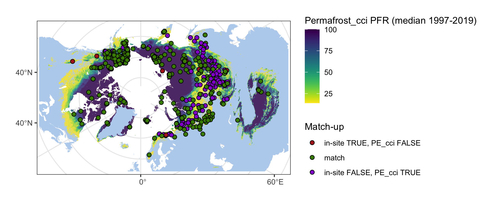
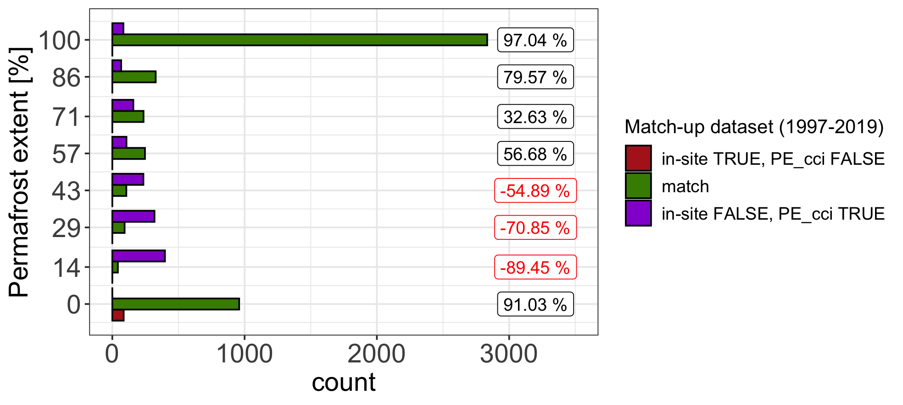

library(readxl)
library(ncdf4)
library(raster)
library(tidyverse)
library(ggforce)
library(grid)
library(sf)
sf::sf_use_s2(FALSE) mapDat <- inSitu_pe %>% mutate(falseTrue = ifelse(pe & is.na(PE_Permafrost_cci), 1,
ifelse(!pe & !is.na(PE_Permafrost_cci), 3, 2))) %>%
filter(!duplicated(Name))
crds_pts <- st_as_sf(mapDat, coords = c("Longitude", "Latitude")) %>% st_set_crs(4326) %>%
st_transform("+proj=stere +lat_0=90 +lat_ts=71 +lon_0=0 +x_0=0 +y_0=0 +datum=WGS84 +units=m +no_defs") %>% st_coordinates()
png("figures/Figure_5.1.png", width = 20, height = 9, units = "cm", res = 250)
map +
geom_raster(data=rast_pe, aes(x=x, y=y, fill=value), alpha=0.8) +
viridis::scale_fill_viridis(begin = 1, end = 0) +
labs(fill = "Permafrost_cci PFR (median 1997-2019)") +
ggnewscale::new_scale_fill() +
geom_point(data = data.frame(crds_pts, shape = as.factor(mapDat$falseTrue)),
aes(x = X, y = Y, fill = shape), size = 2, shape = 21) +
scale_fill_manual("Match-up",
values = c("firebrick", "chartreuse4", "darkviolet"),
labels = c("in-site TRUE, PE_cci FALSE", "match", "in-site FALSE, PE_cci TRUE")) +
labs(x = "", y = "") ## Warning: Raster pixels are placed at uneven horizontal intervals and will be
## shifted. Consider using geom_tile() instead. ## Warning: Raster pixels are placed at uneven vertical intervals and will be
## shifted. Consider using geom_tile() instead. ## Warning: Removed 888 rows containing missing values (geom_raster). ## Warning: Removed 2 rows containing missing values (geom_point). dev.off() ## quartz_off_screen
## 2
tble <- expand_grid(PE_Permafrost_cci = c(0,14,29,43,57,71,86,100), falseTrue = c(1,2,3))
mapDat <- inSitu_pe %>% mutate(falseTrue = ifelse(pe & is.na(PE_Permafrost_cci), 1,
ifelse(!pe & !is.na(PE_Permafrost_cci), 3, 2)),
PE_Permafrost_cci = ifelse(is.na(PE_Permafrost_cci), 0, PE_Permafrost_cci)) %>%
group_by(PE_Permafrost_cci) %>% count(falseTrue) %>% full_join(tble) %>%
arrange(PE_Permafrost_cci, falseTrue) %>% mutate(n = ifelse(is.na(n), 0, n))## Joining, by = c("PE_Permafrost_cci", "falseTrue") label <- mapDat %>% group_by(PE_Permafrost_cci) %>% summarise(percFalse = sum(n[falseTrue%in%c(1,3)]),
percTrue = n[falseTrue==2]) %>%
rowwise() %>%
mutate(perc = (1-(min(c(percFalse, percTrue))/max(c(percFalse, percTrue)))) * ifelse(percTrue>percFalse,100,-100))
png("figures/Figure_5.2.png", width = 20, height = 9, units = "cm", res = 250)
ggplot(NULL, aes(x, y)) +
geom_bar(data = mapDat, mapping = aes(y=PE_Permafrost_cci, x=n, fill=as.factor(falseTrue)),
stat="identity", position = "dodge", orientation = "y", col = "black") +
scale_fill_manual("Match-up dataset (1997-2019)",
values = c("firebrick", "chartreuse4", "darkviolet"),
labels = c("in-site TRUE, PE_cci FALSE", "match", "in-site FALSE, PE_cci TRUE")) +
xlim(0, 3500) +
geom_label(mapping = aes(x = rep(3200, nrow(label)), y = label$PE_Permafrost_cci),
label = paste(round(label$perc,2), "%"), col = ifelse(label$perc>0, "black", "red")) +
theme_bw() +
scale_y_continuous(breaks = label$PE_Permafrost_cci) +
labs(x = "count", y = "Permafrost extent [%]") +
theme(axis.title = element_text(size=rel(1.5)),
axis.text = element_text(size=rel(1.5)),
legend.text = element_text(size=rel(1)),
legend.title = element_text(size=rel(1.1)))
dev.off()## quartz_off_screen
## 2